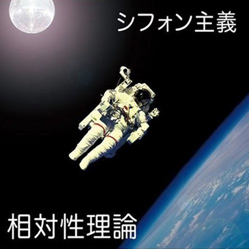
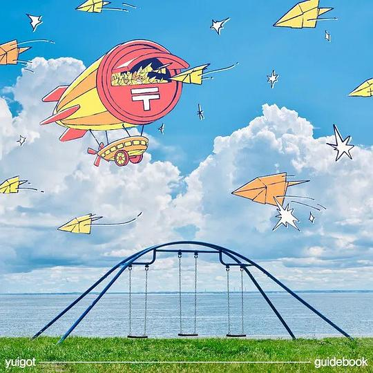
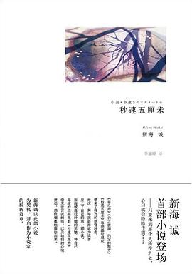
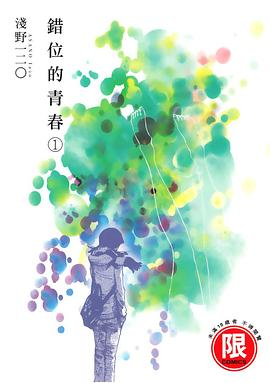

2026年2月
广播发布后不可编辑，所以每条都是那一刻的原话。
2026-02-28 15:47:04
看过 旁观者 ★★★☆☆
节奏与剪辑太混乱，上下动作衔接出戏得一塌糊涂，有时候一些分镜根本看不懂有什么作用。虽然故事的反转蛮教人深思的，但拍得的确不好看。陈坤你为什么要接这部戏呢。
2026-02-28 11:41:19
听过 My Nonfiction ★★★★☆
结合ed画面的话的确蛮好听的。书记唱得不错。
2026-02-28 11:39:53

念出字母时我喜笑颜开了。
2026-02-28 11:38:49

《夢をみる島》为什么不正式发布原版的呢，明明原版编曲更好听呀。
2026-02-28 11:36:52
听过 欲泪海 ★★★★☆
编曲很有意思。词中什么都不要的洒脱我很中意。
2026-02-28 11:35:03
在听 你我经历的一刻 ★★★★☆
天后的声音依旧动听。喜欢词的意象。
2026-02-28 11:34:19
听过 reunion ★★★★☆
不明白怎么就解散了。
2026-02-28 11:34:09
读过 放学后失眠的你 1-2 ★★★★☆
中信这次还蛮用心的。实在痴迷作者的画风与每话标题里的那颗星星。咲的冲天辫与粗眉毛可真可爱。下集预告通过猫的梦境来讲述还真新颖。身体的线条如同高桥留美子的笔下一般健康。
2026-02-23 01:28:55
看过 飞驰人生3 ★★★☆☆
开头洗车的摄影很漂亮，换胎的镜头技术力很高，同时效果也不错。但纯粹的爽感能不能不要扯上家国情怀，再单纯一些不好么。
2026-02-18 15:32:35
读过 千与千寻 ★★★☆☆
小外甥借我读的，除了单纯的用文字复述一遍剧情与加上了无聊的电影截图外，根本一无是处嘛。
2026-02-18 14:13:43
看过 贾科长Dance ★★★☆☆
科长尽是讲些过去讲过的东西。这个模型效果还不错，角色蛮一致的。
2026-02-18 13:49:03
看过 我在时间尽头等你 ★★★☆☆
感冒时小外甥调出来看的，没戴眼镜因此男女主的样貌都不是很清楚。喜欢最后一次穿越时与父亲关系的处理。因为日记什么的追求真爱也太扯了。画幅的变换比较加分。
2026-02-17 17:30:25
读过 少女的红发卡 ★★★★☆
小学那会读的，当时便觉得文风新颖，故事太秘密。
2026-02-17 17:29:31

最喜欢这个时候诚哥的笔触，淡淡的青春的伤感。对第二章《宇航员》尤其喜欢，钟意其中火箭的意象的存在，十分绚丽与神秘。暗恋特别是没有结果的恋爱也真是太悲痛了。结尾的独白太真实。
2026-02-12 18:49:46
看过 东北警察故事3 ★★★★☆
节奏控制得很好，画面有想法，可惜一点小穿帮。故事最后逃离的尽头以为会着墨在庙堂上，但镜头还是回到了人民警察身上。观感最好的两场打戏分别是台球厅与1vs2，不过最有设计有想法的却是最后与广东佬的打斗，很明显地感觉出大部分动作都是角色自发的行为而非套招的方式。秦姐的演员气质我觉着神似周迅。只是没法理解为什么犯罪的一个锚点偏偏要放在母性的身上，没必要。小孩姐演得也蛮好的。很难想象这是一部网大的续集。
2026-02-11 15:42:01
读过 錯位的青春 2 ★★★★☆
在台风这样的自然灾害里两个人都发生了蜕变，一个遇见了能带自己走出阴霾的人，一个终于正视了自己的感情。但错位到最后就是病征，青春就是一场治不好的热病。
2026-02-11 13:05:28

画面蛮别致的。以性为联结串起两个社交层级里中下的学生，由此再纠缠出爱恋的情愫，真是少年少女们恶心的幻想。
2026-02-08 21:42:45
收藏讨论到豆列 理解 电影中的后摇配乐-12首
2026-02-08 09:21:17
读过 什么都有杂货铺 ★★★★☆
灵感与脑洞新颖但无趣，最喜欢不过“幸福的幸福”的定义，即给更多人带来幸福。灰与橘喵的来源有了着落。最后对变成人的执念仍没有放下。
2026-02-07 14:16:25
看过 传奇英雄三国传 / 레전드히어로 삼국전 ★★★★☆
当年看到这个版本，不明白为什么张角是坏人。
2026-02-06 19:35:55
看过 熊出没之年货 ★★★★☆
2026-02-06 19:34:23
看过 熊出没·变形记 ★★★★☆
鲤鱼跳龙门印象深刻。喜欢赵英俊的歌。
2026-02-06 19:33:44
看过 熊出没·奇幻空间 ★★★☆☆
本来以为真人会出镜的。
2026-02-05 22:57:10
看过 电锯惊魂 / Saw ★★★★★
除了追车戏太水，警察太脆皮之外，故事上反转又反转让人眼迷直呼精彩。尤其最后其实在场的作者本人简直点睛之笔。
2026-02-05 17:01:11
看过 小城大事 ★★★☆☆
政商勾结与私有制和雇佣劳动。向革命友情描写颇意外。老林带小余回去的定格镜头很好。摄像师影子的低级穿帮。官僚主义风潮。假惺惺的布景。对知识产权争论的处理太轻浮。耿乐差点没认出来。老陈怎么这里也是舞王（笑）。和高厂长的平行蒙太奇还挺好的。媛媛姐好可惜。问题的出现和解决太过程式化。陪老妈看的又一部电视剧。
2026-02-05 16:12:33
看过 弗兰肯斯坦 / Frankenstein ★★★★☆
“弗兰肯斯坦是个怪物”这句话原来双关含义。摄影好漂亮，道具好真实。陀螺似乎很中意怪物与人类的跨物种爱情呀。对自身主体性的思考与探讨颇弱，导致最后的转变有些太猛了。
2026-02-04 17:03:20
看过 盗钥匙的方法 / 鍵泥棒のメソッド ★★★★☆
完美遵循了“喜剧就是错位”的理念，大体上还是蛮好笑的。喜欢开头车内的摄像运镜，也喜欢最后名字入画时伴随着的引擎轰鸣声。原来人被捅了的真实反应是那样的。
2026-02-04 11:25:59
在读 錯位的青春 1 ★★★★☆
画面蛮别致的。
2026-02-04 11:25:48
在读 秒速五厘米 ★★★★☆
最喜欢这个时候诚哥的笔触，淡淡的青春的伤感。
2026-02-04 11:20:59
想读 錯位的青春 1
画面蛮别致的。
2026-02-03 22:08:17
2026-02-03 13:34:19
在读 什么都有杂货铺 ★★★★☆
灵感与脑洞新颖但无趣，最喜欢不过“幸福的幸福”的定义，即给更多人带来幸福。灰与橘喵的来源有了着落。
2026-02-02 23:16:28
听过 春意红包 ★★★★★
这会又要过年咯。
2026-02-02 22:33:36
看过 碰见你 ★★★☆☆
喜欢一猫一狗一人与一方后视镜的镜头。定格动画表现有趣。运动模式真是稳定哦，原来超广角还能变着花来拍，夜景更纯净了，但画面看起来依旧假惺惺的。贺岁格调少了，今年主要在讲以宠物为典型的单身经济了。章宇的声音真好听。